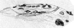

SJAA
Ephemeris
|
SJAA Ephemeris |
MooningDave North |
Of course, this month's main Moon Trick is when intrepid travellers see it in profile - new Moon, the great eclipse on August 11.
Several of our members tell me they'll be going one place or another to see it, so I'm sure we'll get some reports - but I won't be going. I'm sure I'll regret it, but maybe not several thousand dollars worth of regret...
Elevation should be very good for this one - it will be high in the sky. I hope we get some nifty images out of it.
The first thing that jumps out at me (after the eclipse) is the interesting coincidence of the western libration and full moon: August 26.
This often means a good look at the Orientale Basin, and Mare Orientale itself -as well as the amazing weird Big Mountain that appears at these times.
And sure enough, that's what will happen, but unfortunately the best opportunity to view Mare Orientale (with the terminator very near the western limb) will be during daylight.
Second best may be early in the morning, but the already lowish moon will be even closer to the horizon after 2-3 am. So there's a decent shot at a good view around midnight, and I heartily encourage everyone to give it a look (that's Aug 25-26 midnight) but it looks like the July libration might have been better.
I don't trust my own numbers, though, so it's best to look. In any event, what you can see of it should be very interesting.
I tend to dwell on the hunt for Orientale, and this may not be easy for most of you to understand.
First, it's transient. You'll probably only get one or two decent opportunities a year to see something like this, and that's when you find out just how often we get clouds or some other lousy weather phenomenon in Summer. We think it's always nice this time of year, but maybe not.
Second, it's incredible. Orientale is probably the youngest of the Monster Basins (like Nectaris, Humorum, etc.) and shows its shock rings better than any other (Nectaris is second) and the ejecta marks are pretty good too (though not as spectacular as Imbrium). There's no mistaking it when you see it, and quite a shock it can be the first time.
Third, it has a neat sounding name.
Fourth, the Weird Big Mountain. I don't understand what this apparition is (there has been much speculation) but if you see it, you'll know what I mean.
Some time back, when I twisted Akkana's arm to indulge this sport for the first time (looking at the full moon?) she was inspired to draw it, and has been tracking the phenomenon since. With some arm twisting, I can perhaps get her to include one of her drawings and some comments for the column this month.
|  |
| Dave North; last updated: February 05, 2002 | Prev Next |